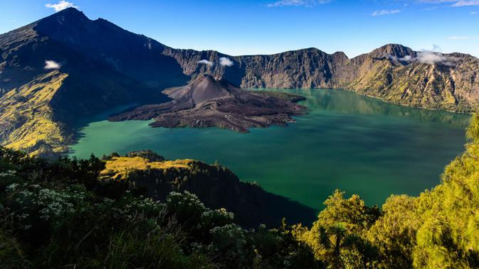
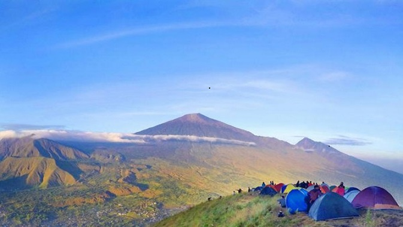

Objek Wisata Gunung Rinjani, dengan Panorama Danau segara anak dan keindahan hutan yang masih hijau
Gunung rinjani pulau lombok memiliki panorama danau segara anak yang memukau dan bukit pergasingan yang memiliki pemandangan alam yang indah

Bukit Pergasingan Sembalun , dengan keindahan petak-petak sawah yang berwarna kuning dan hijau
bukit pergasingan merupakan salah satu bukit yang paling terkenal di pulau lombok

Danau Segara Anak yang memiliki air yang jernih, dan terdapat ikan-ikan yang bermacam-macam
segara anak adalah danau yang ada di kawasan gunung rinjani